Add a validator#
At a glance
This guide shows you how to register as a validator from a Concordium wallet. You will need an account with at least 500,000 CCD available to stake. After following this guide, your validator keys will be generated and your account registered as a validator, ready for keys to be imported into your node.
Prior to becoming a validator, read How to become a validator to learn about best practices for validators. There is a minimum amount to stake (500000 CCD) to become a validator.
Note
All transfers and transactions cost a fee, including staking and unstaking transactions. The fee is based on the set NRG for that transaction and the current exchange rate. The cost of transaction fees is stable in Euros, and therefore the price in CCD varies depending on the CCD to EUR exchange rate. The fee will always be deducted from the Balance of the account, so it is important to have some available CCDs to cover fees. A locked-for-staking balance cannot be used to pay for these transactions. You can see the fee in the transaction log.
Warning
Do not stake all of your funds or you will not have enough to cover transaction fees for unstaking or other transactions.
Concordium Wallet
Access validator setup
Tap the Earn button on the main screen.
On the earnings information screen, tap Or become a validator (advanced) at the bottom of the screen.
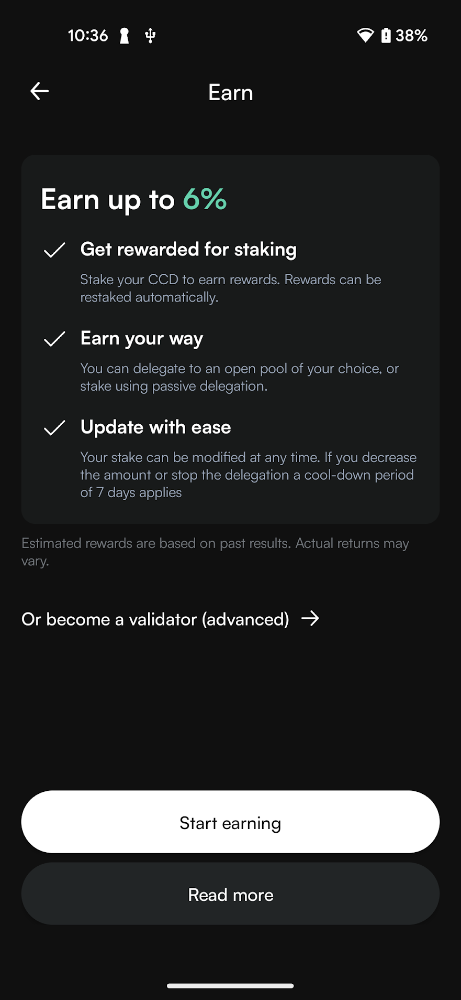
Read through the validator information screen where the key concepts of validation on the Concordium blockchain are explained. This includes information about the validator role, key generation, node requirements, staking pool options, and suspension policies. Tap Start validating at the bottom of the screen to proceed.
Configure validator settings
On the Register validator screen, configure your validator by entering the amount of CCD you want to stake and setting your preferences. You can see your available balance for staking below. Toggle the Restake rewards switch if you want to automatically add your validator rewards to your stake amount. If disabled, rewards will be deposited to your disposable balance at each pay day.
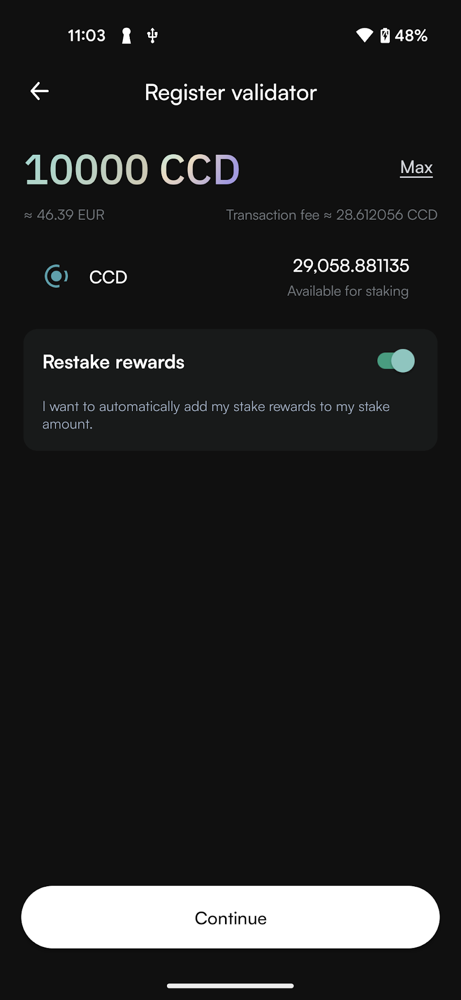
Choose whether you want to open a staking pool or keep it closed. By opening a staking pool, others can delegate stake to your validator, thus increasing the chance that you are selected to produce a block and earn rewards. If you have a staking pool with delegators, the delegators also earn rewards when you produce blocks. Validators are also paid a commission by the delegators for producing blocks on their behalf. You can choose Close for delegation if you do not wish to run a staking pool.
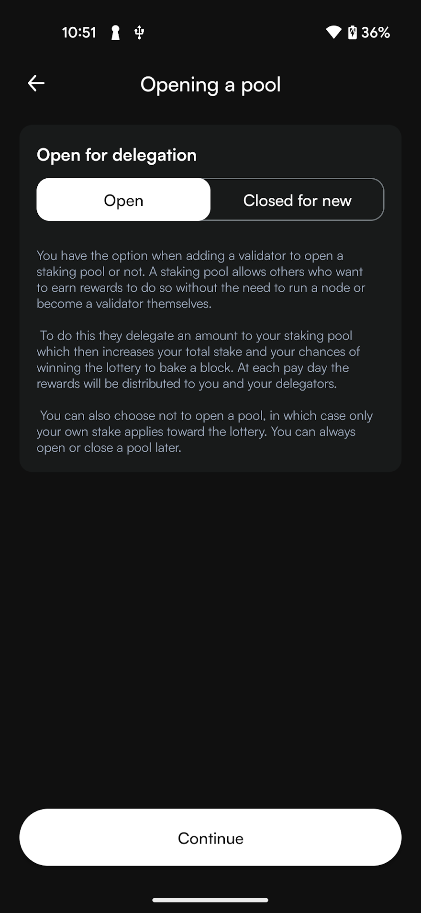
Set commissions for your pool. This is the percentage you wish to earn from delegators to your pool when you have produced a block. Delegators can use this information when choosing a pool. The lower the commission, the greater reward the delegators receive, hence they are more motivated to delegate to you. For example, 10% commission means that you get 10% of the rewards for the total delegated amount, while delegators get the remaining 90% proportionally to their stake. You still get 100% of the rewards for your own staked amount.
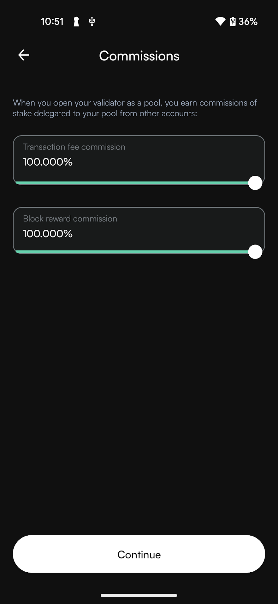
If you open a staking pool, you can optionally provide a URL with information about your validator. This allows delegators to learn more about your pool and make informed decisions. This information is not shared for closed pools or validators. Tap Continue when you have completed your configuration.
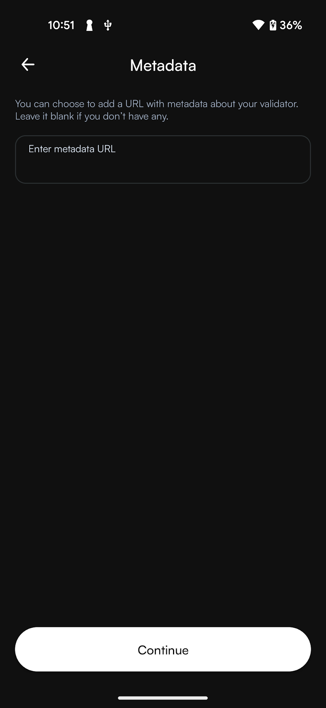
Export validator keys and submit
Export the validator keys as you need them to start the node. Tap Continue and navigate to the location on your device where you want to save the file. Give the file a name and the extension .json.
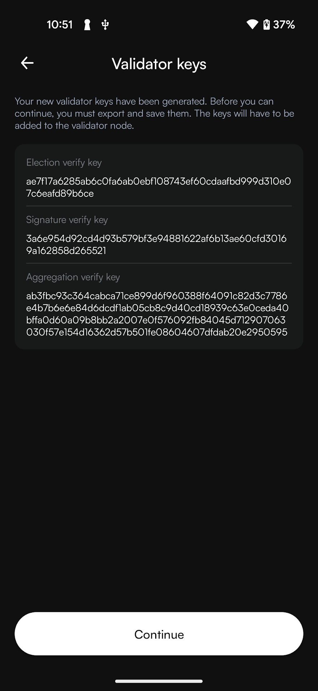
Warning
If you’re going to transfer the validator keys to someone else, make sure to do so through a secure channel. Generate new keys if you believe the keys have been compromised or lost.
Once you have saved the keys, you see an overview screen of the add validator transaction. Review the information. Swipe right on the Submit slider to submit the validator transaction.
The wallet shows a confirmation screen with a green checkmark indicating that your validator registration transaction has been successfully submitted to the chain. You can see the amount you’re validating with. You can click Transaction details to view more information about the transaction, or Close to return to the main screen.
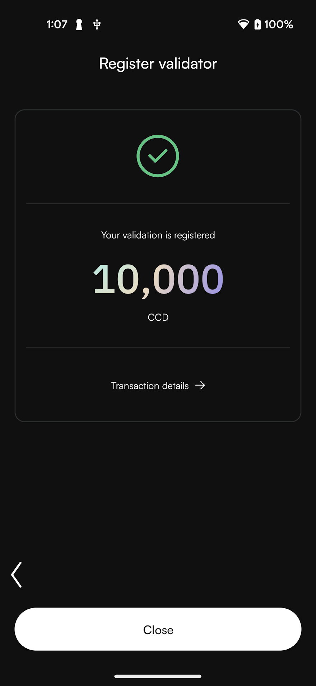
Next steps
You need to import your validator keys file to your node in order to start producing blocks. It is preferable to update them on the node as close to the next pay day as possible to prevent the node from being down as a validator for a longer time.
Desktop wallet
Note
A Single-signature account is an account with only one credential holder. A Multi-signature account is an account where multiple individuals are credential holders and a certain number of credential holders must sign transactions on the account. For more information about multi-signature accounts, see Shared accounts with multiple credentials in Desktop Wallet.
Single signature account
Go to Accounts and select the account you want to add as validator account and click More options.
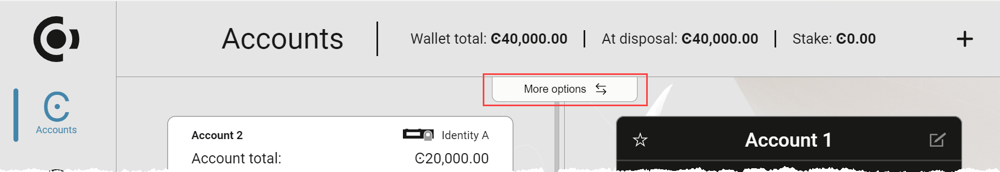
Select Register as a validator.
Specify the amount that you want to stake where it says Amount. The more you stake, the greater the probability that your account will be chosen to produce the next block.
Validator accounts receive a reward when they have produced a block, and the reward is added to the staked amount on the account by default. However, you can change this setting so that the reward is added to the disposable amount instead. Select No, don’t restake if you’d rather add the rewards to the disposable amount on the account.
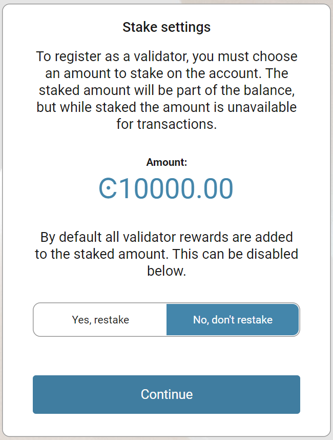
Choose if you want to open a staking pool so delegators may delegate stake to your validator.
Choose Open to open your staking pool for this validator. Click Continue. Click Continue after adjusting the commission rates with the sliders or by typing a value. Enter your Validator metadata URL if you want to provide this information to potential delegators. This is optional. Click Continue.
Choose Closed if you do not want to open a staking pool. Click Continue after reviewing the commission rates and Validator metadata URL.
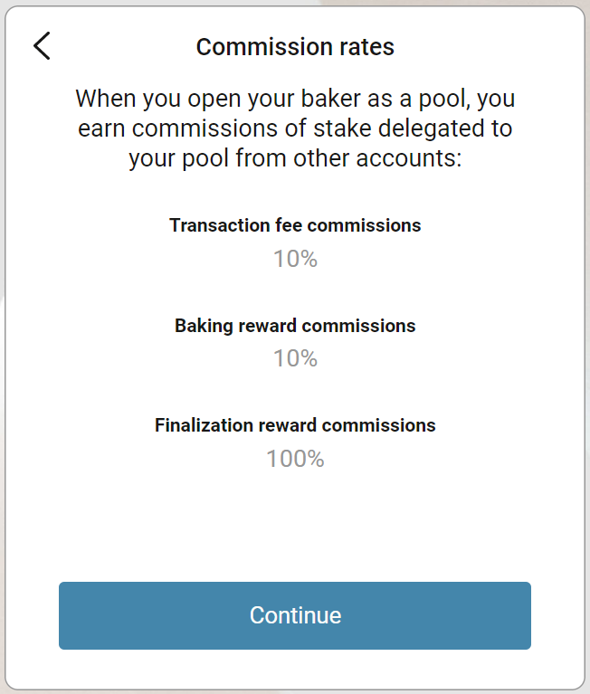
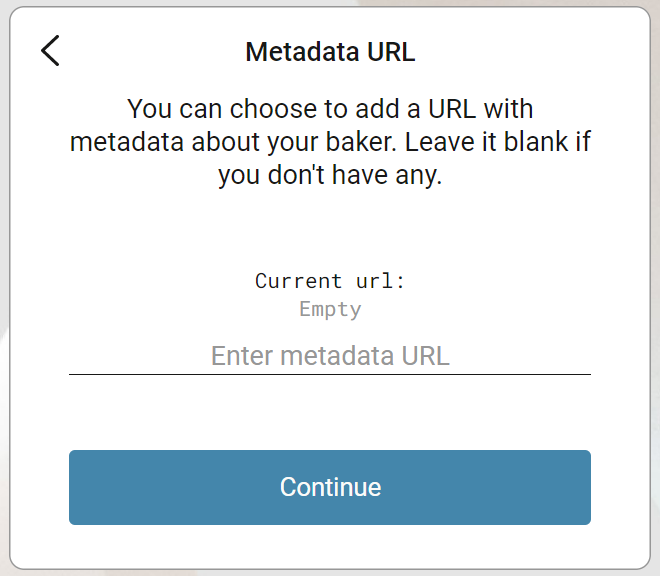
You have to export the validator credentials so that you can start the node with the validator keys. Select Export validator credentials and navigate to the place on your computer where you want to save the file. If you’re running Windows make sure that All Files is selected in Save as type. Give the file a name and the extension .json, and then click Save and navigate to the place on your computer where you want to save the file.
Warning
If you’re going to transfer the validator keys to someone else, make sure to do so through a secure channel. Generate new keys if you believe the keys have been compromised or lost.
There’s a message saying Waiting for device. Please connect your Ledger. Connect the LEDGER device to the computer and enter your PIN on the LEDGER device.
Press the right button to navigate to the Concordium app, and then press both buttons to open the app. The LEDGER device says Concordium is ready. Wait for the message Ledger device is ready in the Desktop Wallet and select Submit.
On the LEDGER device, a message says Review transaction. Review the information to verify that it matches the transaction details in the Desktop Wallet.
When the LEDGER device says Sign transaction, press both buttons to confirm the transaction. The LEDGER device says Concordium is ready.
In the Desktop Wallet, you can see that the transaction has been submitted to the chain. Select Finish.
Multi signature account
Go to the Multi Signature Transactions tab, and then select Make new proposal.
Click Register as a Validator.
Select the account you want to add as validator account, and then select Continue.
Stake an amount
You need to stake an amount of CCD on the account that you want to add as validator account. When you have staked an amount, the amount is still part of the balance, but you can’t transfer it to other accounts. The account always shows how much of the balance that’s been staked.
Specify the amount that you want to stake where it says Amount. The more you stake the greater is the probability that your account will be chosen to produce the next block.
Validator accounts receive a reward when they have produced a block, and the reward is added to the staked amount on the account by default. However, you can change this setting so that the reward is added to the disposable amount instead.
Select No, don’t restake if you’d rather add the rewards to the disposable amount on the account.
Choose if you want to open a staking pool so delegators may delegate stake to your validator.
Choose Open to open your staking pool for this validator. Click Continue. Click Continue after reviewing the commission rates. Enter your Validator metadata URL if you want to provide this information to potential delegators. Click Continue.
Choose Closed if you do not want to open a staking pool. Click Continue after reviewing the commission rates and Validator metadata URL.
When you look at the Transaction Details in the left pane, you can see the identity of the account owner, the account where the CCD are staked from, the staked amount, the estimated fee, and whether rewards are going to be restaked. Verify that the details are as you intended.
Select Generate keys. The validator keys are generated and the public keys are displayed in the left pane. There are three public keys:
Election verify key
Signature verify key
Aggregation verify
Select Continue to generate the transaction.
Generate the transaction
There are two ways that you can generate the transaction:
Generate the transaction without signing. This option enables you to export the transaction proposal without signing it. You don’t need a LEDGER device but you do need an internet connection.
Generate and sign the transaction This option requires a LEDGER device and an internet connection.
In combination, these two options enable organizations to distribute the responsibility of creating and signing transfers among more people. It makes it possible to have one employee create the proposals and another one sign the proposals. It also makes it possible to sign the transaction on the Ledger in a different location than where the proposal was created.
Generate the transaction without signing
Verify that the Transaction details are as you are as you intended, and then select I am sure that the proposed changes are correct.
Select Generate without signing. You can now export the validator credentials.
Generate and sign the transaction on the LEDGER device
Connect the LEDGER device to the computer if you haven’t done so already. There’s a message saying Waiting for device. Please connect your Ledger.
Enter your PIN code on the LEDGER device. Press the buttons above the up and down arrows to choose a digit, and then press both buttons to select the digit. Press the right button to navigate to the Concordium app, and then press both buttons to open the app. The LEDGER device says Concordium is ready. Wait for the message in the Desktop Wallet saying Ledger device is ready.
In the Desktop Wallet verify that all transaction details are correct and select I am sure that the proposed changes are correct.
Select Generate and sign. There’s a message saying Waiting for user to finish the process on the device.
On the LEDGER device, there’s a message saying Review transaction. Review the information to verify that it matches the transaction details in the Desktop Wallet.
When the LEDGER device says Sign transaction, press both buttons to confirm the transaction. The LEDGER device says Concordium is ready.
Note
If you want to decline the transaction, press the right button on the LEDGER device. The hardware wallet now says Decline to sign transaction. Press both buttons to decline. In the Desktop Wallet there’s a message saying The action was declined on the Ledger device. Please try again.
Export validator credentials
You have to export the validator credentials so that you can start the node with the validator keys. Select Export validator credentials and navigate to the place on your computer where you want to save the file.
You can now see Transaction details, Signatures, and Security & Submission Details, which includes the status of the transaction, the identicon, and the digest to sign. You can also see the date and time before which you must submit the transaction proposal. If no more signatures are required, you can submit the transaction to the blockchain. If more signatures are required, you’ll have to export and send the transaction proposal to the co-signers.
Warning
If you’re going to transfer the validator keys to someone else make sure to do so through a secure channel. Generate new keys if you believe the keys have been compromised or lost.
Export a transaction proposal
If more than one signature is needed to sign off on the validator account proposal, you must share a file of the type JSON with the co-signers. In the Signatures pane, you can see how many signatures are required before you can submit the transaction to the blockchain.
In the Desktop Wallet, select Export transaction proposal.
Navigate to the location on your computer where you want to save the file. If you’re on Windows make sure that All Files is selected. Give the file a name and the extension .json, and then click Save.
Send a copy of the file through a secure channel to the co-signers that must sign the transaction. Optionally, you can also send a copy of the identicon through a secure channel that is different from the one used to send the file.
Receive signatures from co-signers
When the co-signers have signed the transaction, they return the signed transaction proposal to you, and you have to import the files into the Desktop Wallet before you can submit the transaction to the chain.
If you left the page with the account transaction, go to Multi-signature Transactions, and then select Your proposed transactions. If you’re still on the same page, go to step 3.
Select the transaction that you want to submit to the chain. You can see an overview of the transaction details and an overview of the signatures. You can also see that the status of the transaction is Unsubmitted, and you can see the identicon, and the transaction hash.
Select Browse to file and then navigate to the location on your computer where you saved the signed transaction files. Select the relevant files, and then select OK. The files are uploaded to the Desktop Wallet and added to the list of signatures. Alternatively, you can drag and drop the signature files from their location on the computer and on to the Desktop Wallet.
Submit the transaction to the blockchain
When you have received and added all the required signatures, you can submit the transaction to the blockchain.
Review the transaction details carefully to ensure that all information is correct.
Select I understand this is the final submission, and that it cannot be reverted.
If you don’t want to submit the transaction to the chain, you can select Cancel. The proposal is no longer active; however it is still visible in the list of proposals.
Select Submit transaction to chain. The transaction is submitted to the chain and finalized on the ledger.
Select Finish to leave the page.
Concordium Wallet for Web
Access validator setup
In the dropdown list, select the account for which you will set up a validator and click Earn.
In the Validation section, click Continue to validation setup.
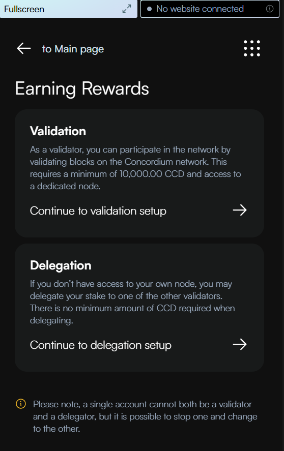
You can now go through a number of informational screens explaining the key concepts of validation on the Concordium blockchain, including the validator role and key generation, node requirements, staking pool options, and suspension policies. Click Next to navigate through the screens. Click Skip to proceed directly to registering your validation.
Configure validator settings
On the Register validator screen, configure your validator by entering the amount you want to stake and selecting your preferences. You can see your available balance at the top. Enter the amount you want to stake in the field and select your restake preference. Validator accounts receive a reward when they have produced a block, and the reward is added to the staked amount on the account by default. Use the Restake rewards toggle to disable this feature if you prefer to have your rewards deposited to your disposable balance at each pay day instead of having them automatically restaked.
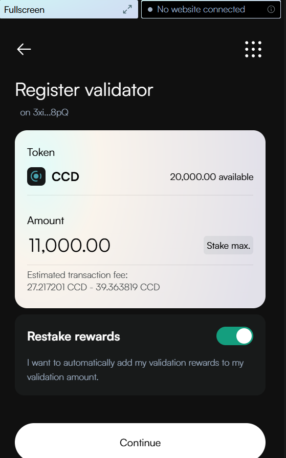
Choose whether you want to open a staking pool or keep it closed. By opening a staking pool, others can delegate stake to your validator, thus increasing the chance that you are selected to produce a block and earn rewards. If you have a staking pool with delegators, the delegators also earn rewards when you produce blocks. Validators are also paid a commission by the delegators for producing blocks on their behalf. You can choose Close for delegation if you do not wish to run a staking pool.
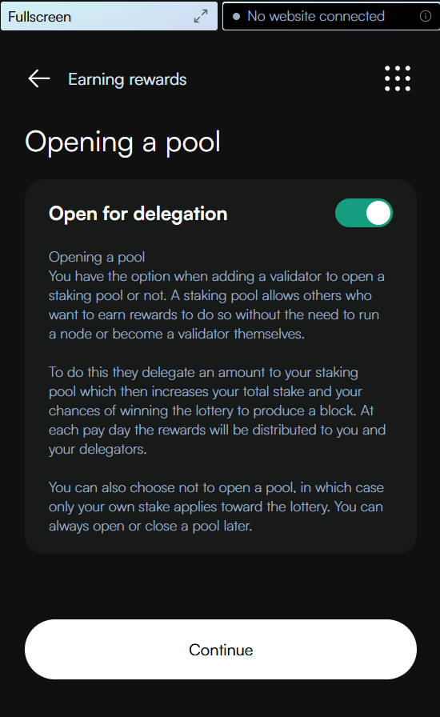
On the Commissions screen, set the percentage of rewards you keep when others delegate their stake to your validator pool. Use the sliders to adjust both the Transaction fee commission and Block reward commission - by default, both are set to 100% (meaning you keep all rewards). After setting your desired commission rates, click Continue to proceed.
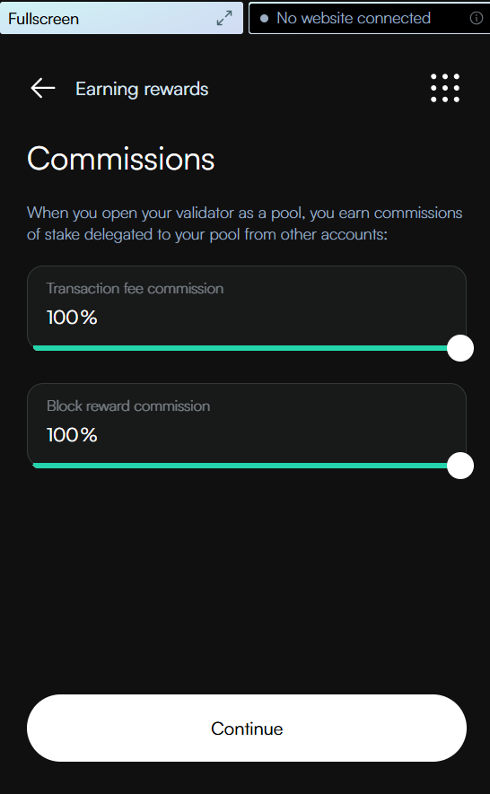
If you open a staking pool, you can optionally enter a URL with information about your validator to give delegators more information about your staking pool to help them research staking pools. Click Continue to proceed after completing your configuration.
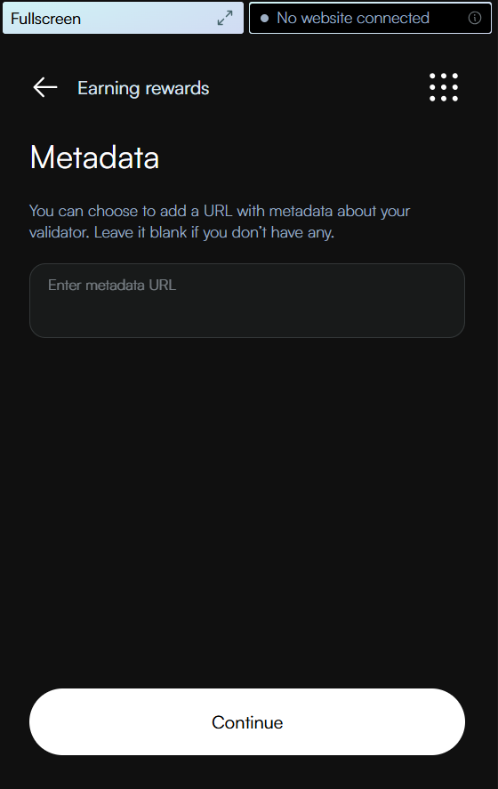
Export validator keys and submit
Export the validator keys before continuing as the keys must be added to the validator node. Click Export as .json and the keys are automatically downloaded as validator-credentials.json to your default download folder. After export, click Continue to complete the transaction.
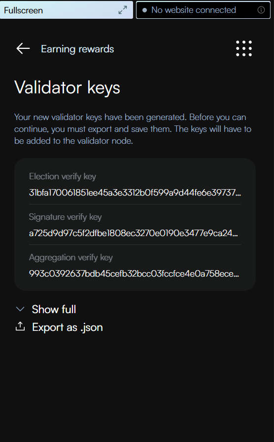
Warning
If you’re going to transfer the validator keys to someone else, make sure to do so through a secure channel. Generate new keys if you believe the keys have been compromised or lost.
Once you have saved the keys, you see an overview screen of the add validator transaction. Review the information including your validator stake amount, reward settings, and commission rates. When you’re satisfied with the configuration, scroll down and click Send to finalize the transaction.
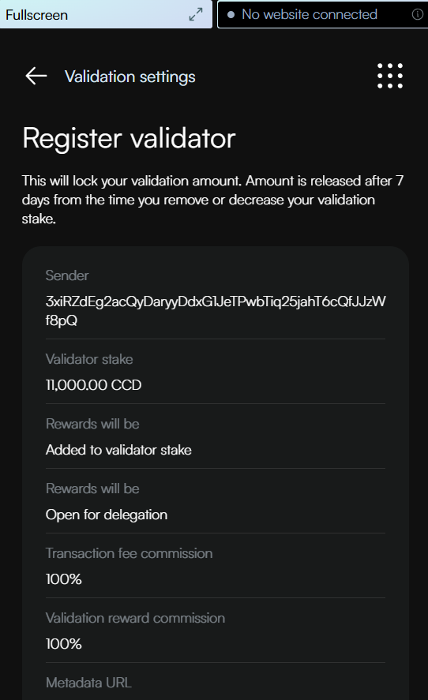
The wallet shows a confirmation screen with a green checkmark indicating that your validator registration transaction has been successfully submitted to the chain. You can see the amount you’re validating with. You can click Transaction details to view more information about the transaction, or Return to account to return to your account overview.
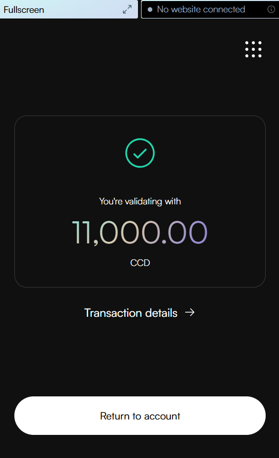
Next steps
You need to import your validator keys file to your node in order to start producing blocks. It is preferable to update them on the node as close to the next pay day as possible to prevent the node from being down as a validator for a longer time.
Warning
Transactions on the blockchain are permanent. That is, they are irreversible and can’t be deleted. Therefore, carefully review that you have selected the right account to add as validator, and that you have entered the correct amount to stake.

{kind=link}
{kind=link}
{kind=link}
{kind=link}
{kind=link}
{kind=link}
{kind=link}
{kind=link}
{kind=link}
{kind=link}
{kind=link}
{kind=link}
{kind=link}
{kind=link}
{kind=link}
{kind=link}
{kind=link}
{kind=link}
{kind=link}